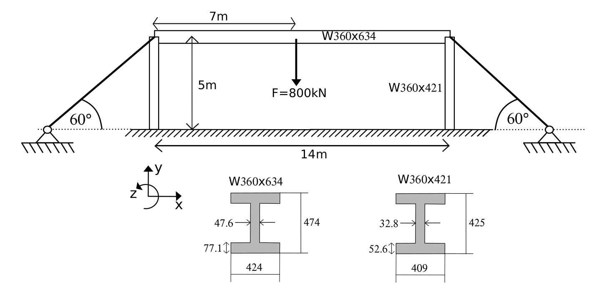
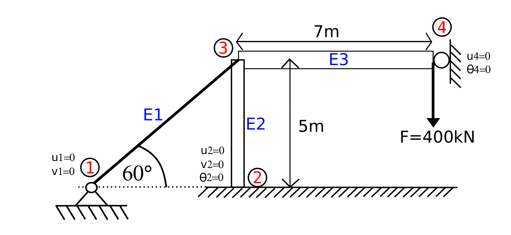

1. Método de la Rigidez

Autor: Claudio Canales Donoso
Página: ccdonoso.github.io
Cursos: Mecánica Computacional - Diseño Computarizado
Universidad de Santiago de Chile
Fecha: 05/03/24
License: BSD 3 clause
Contenido : Método de la Rigidez. - Elemento Barra 2D - Elemento Viga 2D - Resolución de un Problema
NOTA: Este código no tiene como propósito hacer ensamblaje automatico de las matrices. El principal objetivo es ilustrar como resolver un problema
Es penalizado el uso de este código en evaluaciones
Librerías
[ ]:
import numpy as np
import matplotlib.pyplot as plt
import matplotlib.image as mpimg
from IPython.display import display, Math, Latex
# Esto permite convertir las matrices en latex
def bmatrix(a,supress = True,precision=1):
"""Regresa una matriz de LaTeX bmatrix
:a: ndarray
:returns: LaTeX bmatrix como String
"""
if len(a.shape) > 2:
raise ValueError('bmatrix can at most display two dimensions')
b = np.array2string(a,precision=precision,suppress_small=True and supress,max_line_width=160).replace('+', '').replace('0.0e00', '0')
lines =b.replace('[', '').replace(']', '').replace(']', '').replace('\'', '').replace('e0', 'e').replace('e-0', 'e-').splitlines()
rv = [r'\begin{bmatrix}']
rv += [' ' + ' & '.join(l.split()) + r'\\' for l in lines]
rv += [r'\end{bmatrix}']
return '\n'.join(rv)
1.1. Elemento Barra
[105]:
def k_barra(E,A,L,alpha):
"""
Parameters:
-----------
E,A,L,alpha : floats
Valores escalares de la barra
Return:
-------
K: ndarray
Matriz de rigidez
"""
K = np.zeros((4,4))
K[0,0] = np.cos(alpha)**2.
K[1,1] = np.sin(alpha)**2.
K[0,1] = np.cos(alpha)*np.sin(alpha)
K[1,0] = K[0,1]
K[:2,2:] = - K[:2,:2]
K[2:,2:] = K[:2,:2]
K[2:,:2] = - K[:2,:2]
return K*E*A/L
1.2. Elemento Viga
[106]:
def k_viga_horizontal(E,A,L,I):
"""
Parameters:
-----------
E,A,L,I : floats
Valores escalares de la viga
Return:
-------
K: ndarray
Matriz de rigidez
"""
K = np.zeros((6,6))
K[0,0] = E*A/L
K[0,3] = -E*A/L
K[3,3] = E*A/L
K[3,0] = -E*A/L
K[1,1] = 12.*E*I/(L**3.)
K[1,4] = -12.*E*I/(L**3.)
K[4,4] = 12.*E*I/(L**3.)
K[4,1] = -12.*E*I/(L**3.)
K[1,2] = 6.*E*I/(L**2.)
K[2,1] = 6.*E*I/(L**2.)
K[1,5] = 6.*E*I/(L**2.)
K[2,4] = -6.*E*I/(L**2.)
K[4,2] = -6.*E*I/(L**2.)
K[5,1] = 6.*E*I/(L**2.)
K[4,5] = -6.*E*I/(L**2.)
K[5,4] = -6.*E*I/(L**2.)
K[2,2] = 4.*E*I/L
K[5,5] = 4.*E*I/L
K[2,5] = 2.*E*I/L
K[5,2] = 2.*E*I/L
return K
def rot_viga(K,alpha):
R = np.zeros((6,6))
R[0,0] = np.cos(alpha)
R[1,1] = np.cos(alpha)
R[0,1] = -1.*np.sin(alpha)
R[1,0] = np.sin(alpha)
R[2,2] = 1.
R[3:,3:] = R[:3,:3]
return R
def k_viga(E,A,I,L,alpha):
K = k_viga_horizontal(E,A,L,I)
R = rot_viga(K,alpha)
return R @ K @ R.T
1.3. Problema de método de la rígidez.
La estructura presentada en la Fig 1., esta conformada por dos pilares, una viga y dos cables. Todo está hecho de acero \((E = 210x10^9 Pa)\). Los cables tienen un diámetro de \(4 [mm]\); la viga y los pilares están hechos de perfiles comerciales W360x634 y W360x421, respectivamente. Estos tienen como tiene como propiedades

1.3.1. Solución
Definir los gl y elementos del problema
Calcular las matrices de rigidez de cada uno de los elementos
Ensamblar estas matrices.
Postproceso de los resultados
1.3.2. Simplificación del modelo.

1.3.3. Grados de libertad de la estructura
[107]:
u = np.array(['u1','v1','u2','v2','r2','u3','v3','r3','u4','v4','r4']).reshape(-1,1)
f = np.array(['U1','V1','U2','V2','M2','U3','V3','M3','U4','V4','M4']).reshape(-1,1)
display(Math("[K_G]"+bmatrix(u)+"="+bmatrix(f)))
1.3.4. Matriz de rigidez de los elementos
Elem. |
Tipo |
Nodo i |
Nodo j |
\(\alpha\)º |
Largo \([m]\) |
Área \([m^2]\) |
I \([m^4]\) |
|---|---|---|---|---|---|---|---|
I |
Barra |
1 |
3 |
60 |
5.773 |
\(\pi(2 x10^{-3})\) |
|
II |
Viga |
2 |
3 |
90 |
5 |
0.00537 |
\(1600 x10^{-6}\) |
III |
Viga |
3 |
4 |
0 |
7 |
0.00808 |
\(2740 x10^{-6}\) |
[108]:
E = 210e+9
k1 = k_barra(E,np.pi*(2*10**(-3))**2.,5.773,np.pi/180.*60.) # Matriz de Rigidez de Barra 1
u1 = np.array(['u1','v1','u3','v3']).reshape(-1,1) #Desplazamientos 1
k2 = k_viga(E,0.00537,1600e-6,5.,np.pi/2.) # Matriz de Rigidez de viga 1
u2 = np.array(['u2','v2','r2','u3','v3','r3']).reshape(-1,1) #Desplazamientos 2
k3 = k_viga(E,0.00808,2740e-6,7.,0.) # Matriz de Rigidez de viga 2
u3 = np.array(['u3','v3','r3','u4','v4','r4']).reshape(-1,1) #Desplazamientos 3
class Elements:
def __init__(self,k,u):
self.k = k
self.u = u
e1 = Elements(k1,u1)
e2 = Elements(k2,u2)
e3 = Elements(k3,u3)
1.3.5. Matriz de Rigidez Elemento 1 (barra).
[109]:
display(Math(bmatrix(k1)+bmatrix(u1)+"= [F_1]"))
1.3.6. Matriz de Rigidez Elemento 2 (viga).
[110]:
display(Math(bmatrix(k2)+bmatrix(u2)+"= [F_2]"))
1.3.7. Matriz de Rigidez Elemento 3 (viga).
[111]:
display(Math(bmatrix(k3)+bmatrix(u3)+"= [F_3]"))
1.3.8. ¿Cómo ensamblar estas matrices?
Cada una de estas matrices de rigidez, presenta gl en común, por lo tanto existe una relación entre cada una de estas matrices de rigidez y esta determinada por como están conectados los elementos. Es posible sumar cada una de las matrices de rigidez, si es que estas están escritas en termino de los gl globales. Por ejemplo, la relación local del elemento barra esta dada por:
Queremos escribir esta ecuación en término de los gl globales, es decir:
Para ellos es necesario extender la matriz de rigidez de los elementos, \([K_1] \neq [K_{e1}]\) y $[F_1] :nbsphinx-math:`neq [F_{e1}] `$.
[112]:
kg1 = np.zeros((11,11))
for i,id_i in enumerate(u1):
for j,id_j in enumerate(u1):
r , c = np.argwhere(u==id_i)[0,0],np.argwhere(u==id_j)[0,0]
kg1[r,c] = k1[i,j]
1.3.9. Matriz Local Elemento 1 (Barra)
[113]:
display(Math(bmatrix(u1.T)))
display(Math(bmatrix(k1)+bmatrix(u1).replace('\'', '')+"= [F_1]"))
1.3.10. Matriz Local escrita con todos los gl.
[114]:
display(Math(bmatrix(u.T)))
display(Math(bmatrix(kg1)+bmatrix(u)+"= [F_{e1}]"))
Esta operación permite escribir la matriz de rigidez local, en termino de todos los gl de desplazamientos del modelo.
Pero esta igualdad se puede escribir en terminos del vector de desplazamientos globales.
Si es que sumamos cada una de las matrices de rigidez de los elementos, en termino de los gl globales, obtenemos la matriz de rigidez global.
Es decir, la suma de cada una de las matrices de rigidez en término de los gl globales, nos da la matriz de rigidez global.
Así, se obtiene la relación entre la matriz de rigidez global. Esta expresión relaciona linealmente los desplazamientos, con las fuerzas externas del modelo.
1.3.11. Ensamblaje
Para ensamblar utilizaremos el código anterior, pero sumando todos los elementos.
[115]:
elem = [e1,e2,e3]
kg = np.zeros((11,11)) # Matriz Global con ceros
for e in elem:
for i,id_i in enumerate(e.u):
for j,id_j in enumerate(e.u):
r , c = np.argwhere(u==id_i)[0,0],np.argwhere(u==id_j)[0,0]
kg[r,c] = kg[r,c] + e.k[i,j]
[116]:
display(Math(bmatrix(kg)+bmatrix(u)+"= [F_{ext}]"))
[117]:
u_desconocidos = np.array(['u3','v3','r3','v4']).reshape(1,-1)
f_conocidas = np.array([0.,0.,0.,-4000e3]).reshape(1,-1)
ind_u_desconocidos = np.argwhere(u_desconocidos==u)[:,0]
ind_u_conocidos = np.delete(np.arange(len(u)), ind_u_desconocidos)
Para resolver este problema, es necesario ordenar la matriz anterior de acuerdo a:
[118]:
kaa = np.zeros((len(ind_u_desconocidos),len(ind_u_desconocidos)))
for i,ii in enumerate(ind_u_desconocidos):
for j,jj in enumerate(ind_u_desconocidos):
kaa[i,j] = kg[ii,jj]
[119]:
display(Math(bmatrix(kaa)+bmatrix(u_desconocidos.T)+"="+bmatrix( f_conocidas.T)))
[120]:
ux = np.linalg.solve(kaa,f_conocidas.T)
print(ux)
[[ 0.01256584]
[-0.01771931]
[-0.04277296]
[-0.36612702]]
[121]:
ug = np.zeros((len(u),1))
for i,ii in enumerate(ind_u_desconocidos):
ug[ii] = ux[i]
display(Math("[K_G]"+bmatrix(ug,supress=False,precision=3)+" = "+bmatrix(kg@ug) +"= [F_{ext}]"))
1.3.12. Postproceso
Ya que conocemos los desplazamientos, podemos obtener las fuerzas internas de cada uno de los elementos, con las matrices locales.
1.3.13. Matriz de Rigidez Elemento 1 (barra).
[122]:
ul1=np.zeros((len(u1),1))
c=0
for i,ii in enumerate(u):
if(ii in u1):
ul1[c] = ug[i]
c=c+1
display(Math(bmatrix(k1)+bmatrix(u1)+"= [F_1]"+"="+bmatrix(k1 @ ul1)))
print(esfuerzo_barra=)
1.3.14. Matriz de Rigidez Elemento 2 (viga).
[123]:
ul2=np.zeros((len(u2),1))
c=0
for i,ii in enumerate(u):
if(ii in u2):
ul2[c] = ug[i]
c=c+1
display(Math(bmatrix(k2)+bmatrix(u2)+"= [F_2]"+"="+bmatrix(k2 @ ul2)))
1.3.15. Matriz de Rigidez Elemento 3 (viga).
[125]:
ul3=np.zeros((len(u3),1))
c=0
for i,ii in enumerate(u):
if(ii in u3):
ul3[c] = ug[i]
c=c+1
display(Math(bmatrix(k3)+bmatrix(u3)+"= [F_3]"+"="+bmatrix(k3 @ ul3)))